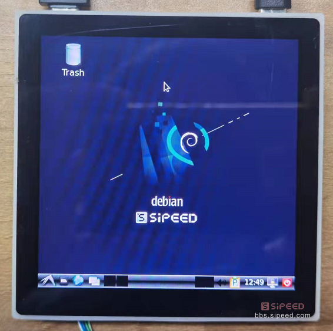

中文
中文基础上手
Dock 相关使用
连接板子
我们可以很容易看到底板背部上有串口的 TX 和 RX 引脚标识。因此可以使用 ttl 电平的串口来使板子与电脑进行通信（Tina和Debian均适用）。
对于 Tina 系统可以使用核心板上的 typec 接口和电脑上的 adb 终端来进行连接
对于 Debian 系统可以外接键盘和鼠标来直接操作
Debian 相关事项
启动会比较慢，取决于TF卡的速度。
用户名为 root 密码是 licheepi
使用串口与 debian 系统连接的话会一直打印内核信息。解决方法是：
- 使用root权限编辑
/etc/rsyslog.conf并且把文件最后一行中的*.emerg改成#*.emerg - 重启 rsyslog 服务，直接执行
/etc/init.d/rsyslog restart即可
想要在图形化界面中调出命令行的方法：
键盘执行 Alt+F2 打开运行，接着在里面输入 termit 即可打开命令行终端。
点灯示例
当我们成功进入系统(Tina和debian均可)后，就可以进行基础的点灯操作啦！
核心板的螺丝固定焊盘旁有一颗 LED ，查看尺寸图很容易看到：
点开查看尺寸图
从原理图可以查到 LED 连接的是 PC0 引脚，根据简单的公式 ('C'-'A')x32 + 0 = 2x32+0 = 64
当然我们也可以查看 pinmux-pins 文件中的内容来知道 IO 复用情况表：
cat /sys/kernel/debug/pinctrl/2000000.pinctrl/pinmux-pins
...
pin 64 (PC0): device 2008000.ledc function ledc group PC0 #这里可以看到是LED引脚
pin 65 (PC1): UNCLAIMED
pin 66 (PC2): UNCLAIMED
pin 67 (PC3): UNCLAIMED
pin 68 (PC4): UNCLAIMED
pin 69 (PC5): UNCLAIMED
pin 70 (PC6): UNCLAIMED
pin 71 (PC7): UNCLAIMED
...
我们先导出该 GPIO：
echo 64 > /sys/class/gpio/export #导出GPIO64
然后再将该 IO 置为输出状态，即可操作其电平：
echo out>/sys/class/gpio/gpio64/direction #设置IO为输出
echo 1 > /sys/class/gpio/gpio64/value #输出高电平
echo 0 > /sys/class/gpio/gpio64/value #输出低电平
上面的是最简单的使用 IO 的操作了，就不细说了吧。
不使用IO的话就取消导出
echo 64 > /sys/class/gpio/unexport #取消导出GPIO64
至此我们就成功在 RISC-V 64 D1上点灯啦~
你也可以对 串行RGB LED WS2812 进行花式点灯：
echo 255 > /sys/class/leds/sunxi_led0r/brightness #红灯亮
echo 0 > /sys/class/leds/sunxi_led0r/brightness #红灯灭
echo 255 > /sys/class/leds/sunxi_led0g/brightness #绿灯亮
echo 0 > /sys/class/leds/sunxi_led0g/brightness #绿灯灭
echo 255 > /sys/class/leds/sunxi_led0b/brightness #蓝灯亮
echo 0 > /sys/class/leds/sunxi_led0b/brightness #蓝灯灭
外设功能验证
音频功能
- 录音设备查看
使用 arecord -l 命令
root@MaixLinux:~# arecord -l
**** List of CAPTURE Hardware Devices ****
card 0: audiocodec [audiocodec], device 0: SUNXI-CODEC 2030000.codec-0 []
Subdevices: 1/1
Subdevice 0: subdevice 0
card 1: snddmic [snddmic], device 0: 2031000.dmic-dmic-hifi dmic-hifi-0 []
Subdevices: 1/1
Subdevice 0: subdevice 0
card 2: sndhdmi [sndhdmi], device 0: 2034000.daudio-audiohdmi-dai 20340a4.hdmiaudio-0 []
Subdevices: 1/1
Subdevice 0: subdevice 0
- 播放设备查看
使用 aplay -l 命令
root@MaixLinux:~# aplay -l
**** List of PLAYBACK Hardware Devices ****
card 0: audiocodec [audiocodec], device 0: SUNXI-CODEC 2030000.codec-0 []
Subdevices: 1/1
Subdevice 0: subdevice 0
card 2: sndhdmi [sndhdmi], device 0: 2034000.daudio-audiohdmi-dai 20340a4.hdmiaudio-0 []
Subdevices: 1/1
Subdevice 0: subdevice 0
录音播放测试：
arecord -D hw:1,0 -f S16_LE -t wav -d 3 t.wav #录音
aplay -D hw:0,0 t.wav #播放录音
另外可以使用 alsamixer 进行音量调整
点开查看运行alsamixer
┌────────────────────────────── AlsaMixer v1.2.4 ──────────────────────────────┐
│ Card: audiocodec F1: Help │
│ Chip: F2: System information │
│ View: F3:[Playback] F4: Capture F5: All F6: Select sound card │
│ Item: Headphone [dB gain: -24.00] Esc: Exit │
│ │
│ ┌──┐ ┌──┐ │
│ │ │ │ │ │
│ │ │ │ │ │
│ │ │ │ │ →
│ │ │ │ │ →
│ │ │ │▒▒│ →
│ │ │ │▒▒│ →
│ │ │ │▒▒│ →
│ │ │ │▒▒│ →
│ │▒▒│ │▒▒│ →
│ │▒▒│ │▒▒│ │
│ │▒▒│ │▒▒│ │
│ ├──┤ ┌──┐ ┌──┐ Off ┌──┐ ┌──┐ ┌──┐ └──┘ │
│ │MM│ │MM│ │MM│ │MM│ │MM│ │MM│ │
│ └──┘ └──┘ └──┘ └──┘ └──┘ └──┘ │
│ 25 63 │
│ <Headphon>FMINL ga FMINR ga ADC1 ADC ADC1 Inp ADC1 Inp ADC1 Inp ADC1 vol │
└──────────────────────────────────────────────────────────────────────────────┘USB功能
默认内核支持外挂U盘的驱动，插上U盘后可以使用 fdisk -l 指令查看到新增的 /dev/sda 设备
如果U盘没有被格式化，应该使用mkfs.vfat指令来格式化U盘，再使用mount指令挂载U盘。
无线网络
使用 Tina 系统
LicheeRV 底板默认使用 XR829 或者 RTL8723BS wifi 模块，可以使用以下指令进行联网操作
先配置热点信息：需要手动在 /etc/wifi 目录下的 wpa_supplicant.conf 文件里添加下面内容
network={
ssid="WiFi_name"
psk="WiFi_password"
}
配置完成后重启一下(执行 reboot 命令即可)，重启完成后执行 ifconfig wlan0 up; udhcpc -iwlan0 & 后即可连上对应的wifi。
连上网络后，就可以使用 ssh (自己记得设置一下密码)来远程登录板卡，或者使用 scp 来进行文件传输。
使用 debian 系统
Debian 不支持命令行联网
点击系统菜单--Preferenes--Connman Settings，打开 Network Settings ，查看网络属性中的 Interface 是否为 wlan0。双击网络名称，并输入 WiFi 密码进行连接

成功连接网络之后，通过系统系统菜单--Preferenes--Connman Settings，查看网络属性查看网络的 IP 地址
屏显触摸
LicheeRV系列可以使用以下显示屏：
- SPI屏 1.14寸屏(TODO)
- RGB屏 4.3寸 480x272；5.0寸 800x480；
- RGB+SPI屏 4.0寸 480x480(st7701s); 4.0寸 720x720(nv3052c)
- MIPI屏 8.0寸 1280x720(ILI9881C)
如果需要调试屏幕驱动，可以使用以下指令查看屏幕驱动信息：
以下信息根据烧录镜像的不同而打印的不一样。
cat /sys/class/disp/disp/attr/sys
screen 0:
de_rate 300000000 hz, ref_fps:60
mgr0: 480x480 fmt[rgb] cs[0x204] range[full] eotf[0x4] bits[8bits] err[0] force_sync[0] unblank direct_show[false] iommu[1]
dmabuf: cache[0] cache max[0] umap skip[0] overflow[0]
lcd output backlight( 50) fps:59.5 esd level(0) freq(60) pos(0) reset(0) 480x 480
err:0 skip:184 irq:230715 vsync:0 vsync_skip:0
BUF enable ch[1] lyr[0] z[16] prem[N] a[globl 255] fmt[ 0] fb[ 480, 480; 480, 480; 480, 480] crop[ 0, 0, 480, 480] frame[ 0, 0, 480, 480] addr[ffe00000, 0, 0] flags[0x 0] trd[0,0]
屏幕彩条测试：echo 1 > /sys/class/disp/disp/attr/colorbar
视频播放
我们可以尝试在LicheeRV上播放BadApple啦~ 视频文件下载
Tina镜像中内置了ffmpeg软件包；ffmpeg是强大的多媒体库，可以用于录屏或者播放
录屏指令：
ffmpeg -f fbdev -framerate 10 -i /dev/fb0 record.avi
播放指令（分别是扬声器播放音频和hdmi播放音频）：
ffmpeg -i /mnt/UDISK/badapple_640480_xvid.mp4 -pix_fmt bgra -f fbdev /dev/fb0 -f alsa hw:0,0
ffmpeg -i /mnt/UDISK/badapple_640480_xvid.mp4 -pix_fmt bgra -f fbdev /dev/fb0 -f alsa hw:2,0
这里由于是CPU软解，所以测试最高分辨率约为720x540， 再高会变卡
麦克风阵列(仅debian系统)
将板子与麦克风阵列连接好后（需要注意不要将排线接反和不要把引脚接反。），直接执行内置的 micarr_0609 指令即可即
sudo ./micarr_0609
有麦克风阵列相关的二次开发需求，可以联系 support@sipeed.com

86Panel
如果烧录后显示不正确或者不对劲的话，前往相关问题纠错一下
下面仅进行简单的操作。另外上面 dock 板子的操作同样适用于 86Panel。
对于使用 tina 系统的是没有 GUI 界面的。因此下面使用 debian 简单展示一下屏幕
烧录 debian 系统后，插卡启动，等待2分钟左右，屏幕上就会显示登录界面

输入用户名 sipeed，密码 licheepi，即可进入桌面 （使用USB HOST口外接键盘鼠标进行输入）

进入桌面后可以进行一些基础操作
- Alt+F2 可以打开 运行 ，接着输入 termit 即可打开命令行终端

接下来让我们尝试在Debian下跑一下Hello World:
另有720P高清屏的效果对比，有米的朋友可以考虑入手。
注意使用的时候应当烧录一下板级配置文件来成功显示，具体请看86panel显示异常
实际显示效果如下：

点灯操作
由于 86Panel 的核心板的 LED 与底板外设复用了，因此不能直接使用核心板的灯了。
将直插型 LED 正确地与预留的 IO 焊盘连接好后可以参考 dock 底板点灯的方式来点灯。
连接网络
有线网络
86 Panel 支持百兆网络，使用套餐附送的网线接上板子网口后，执行以下指令来连接有线网络
ifconfig eth0 up
udhcpc -ieth0
无线网络
可以参考 Dock 底板连接网络的方法
其他
与 dock 底板相关操作一致
触摸屏测试
仅 tina 系统内置 触摸demo
如果你购买的是86面板套餐，可以使用 ts_test 进行触摸测试。
注意触摸驱动有瑕疵，ts_test测试时松开后，光标会不动，但是终端仍会正常打印信息
root@MaixLinux:/# ts
ts_calibrate ts_harvest ts_print_mt ts_test ts_verify
ts_finddev ts_print ts_print_raw ts_test_mt tshowimg
BSP SDK 开发指南
为了方便用户自行开发，矽速整理发布了 LicheeRV 的bsp开发docker镜像，大家使用该镜像可以快速开始D1的系统级开发。
在网盘中下载对应的docker文件后，解压到tar文件后导入到docker
gzip -d licheerv_d1_compile.tar.gz #解压成tar文件
docker import licheerv_d1_compile.tar licheerv_d1_compile:latest #docker导入镜像
成功运行后应当重新登陆一次；用户名为 nihao，密码为 sipeed123
sudo docker run -it licheerv_d1_compile:latest /bin/bash # 交互模式启动D1镜像编译环境
login #切换用户
进入容器后的基础编译操作为：
cd ~/sdk/tina-d1-open_new/
source build/envsetup.sh
lunch #选1
make menuconfig #去掉里面的 alsa-plugin 选项，否则编译不过
# alsa-plugins 在 menuconfig 中的位置如下
#.
#└── Libraries
# └── alsa-plugins
make -j8 #按实际CPU性能编译
pack #打包
SDK内置了一些版型的dts，你可以自行选择编辑：
device/config/chips/d1/configs/nezha/board_xxx.dts
其他SDK的开发说明，可以参见全志开发平台上下载的相关文档
https://open.allwinnertech.com/
也可以加全志交流QQ群：498263967
如果需要自己下载SDK开发，参考全志在线相关网页：https://d1.docs.aw-ol.com/
WAFT 开发指南
TODO